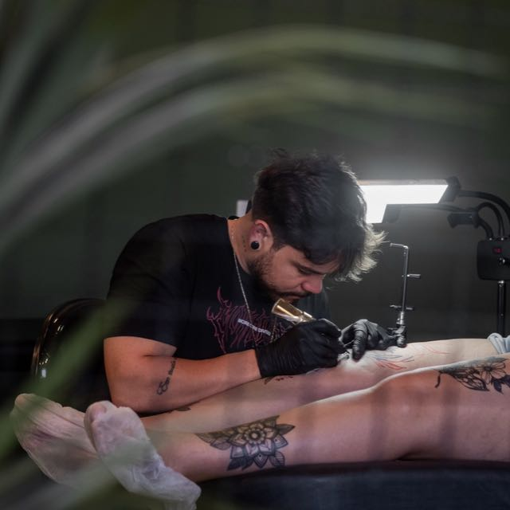
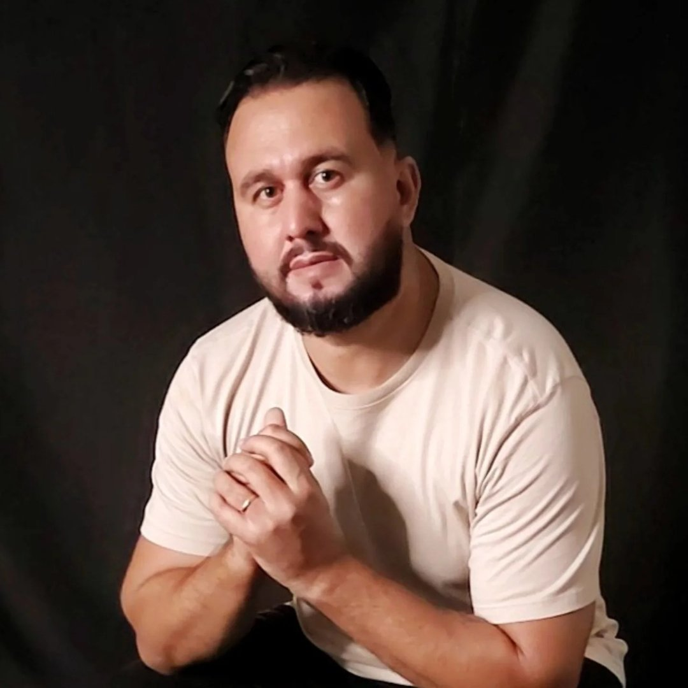

Aurum Tattoo
Arte rara para peles únicas.
Nossos artistas
Conheça os talentosos artistas por trás das obras de arte que transformam peles em telas vivas.

Marcos Antônio
Realismo e Fine Line
Especialista em traços delicados e designs ornamentais. Transforma ideias em arte permanente com precisão e elegância.

Leandro Duarte
Realismo e Fine Line
Com mais de 10 anos de experiência, especializado em realismo e trabalhos detalhados em preto e cinza. Cada tatuagem é uma obra de arte única.
Por que escolher a Aurum?
Excelência Artistica
Cada tatuagem é tratada como uma obra de arte única, com atenção aos mínimos detalhes.
Ambiente Premium
Cada tatuagem é tratada como uma obra de arte única, com atenção aos mínimos detalhes.
Atendimento Personalizado
Do conceito à execução, trabalhamos em conjunto para criar a tatuagem perfeita para você.
Arte rara para peles únicas.
© 2026 Aurum Tattoo. Todos os direitos reservados.